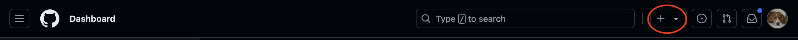
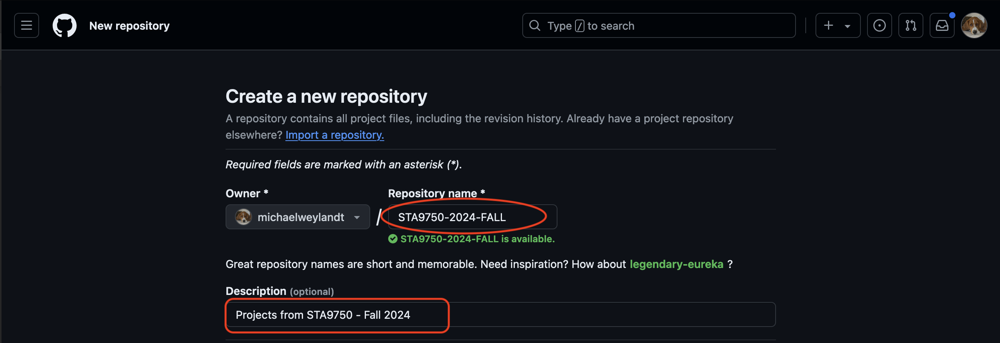
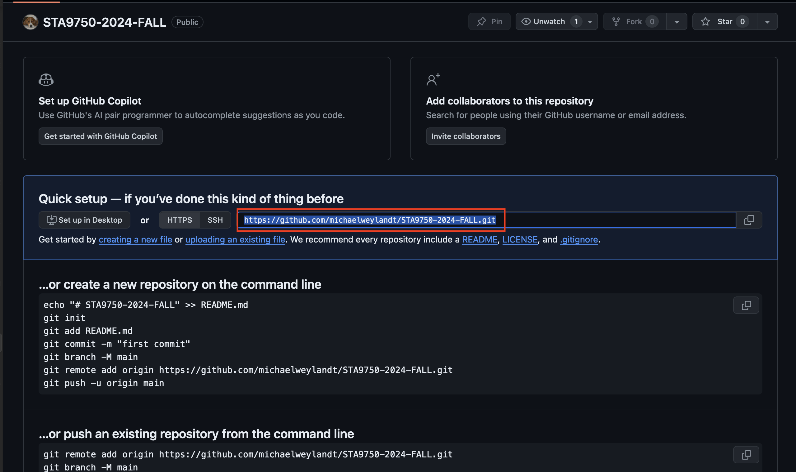
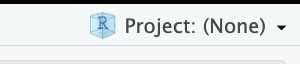
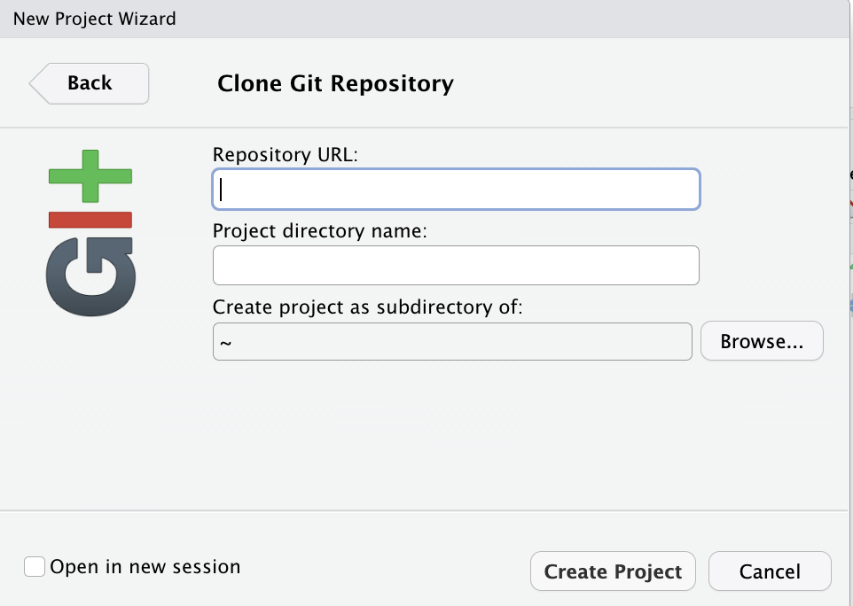
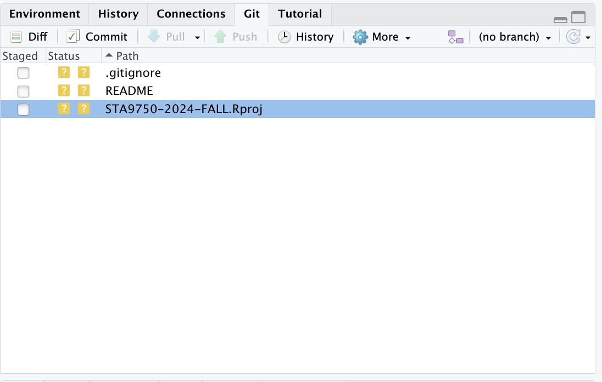
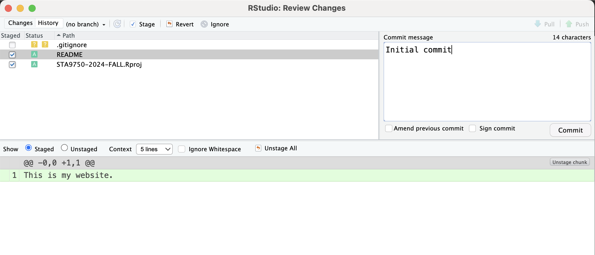
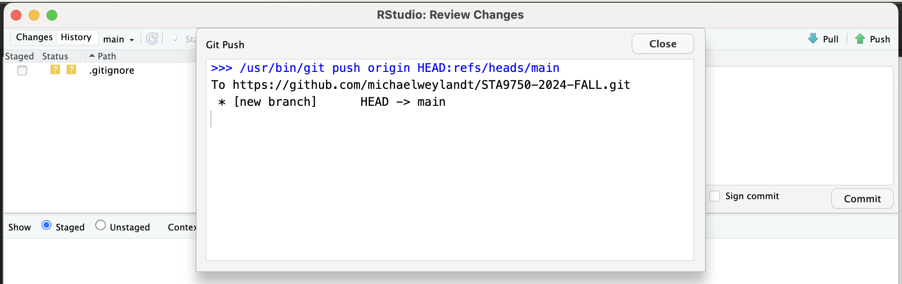
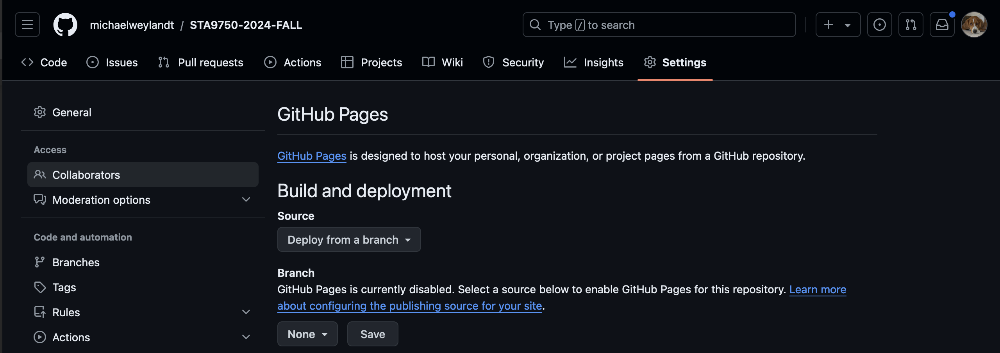
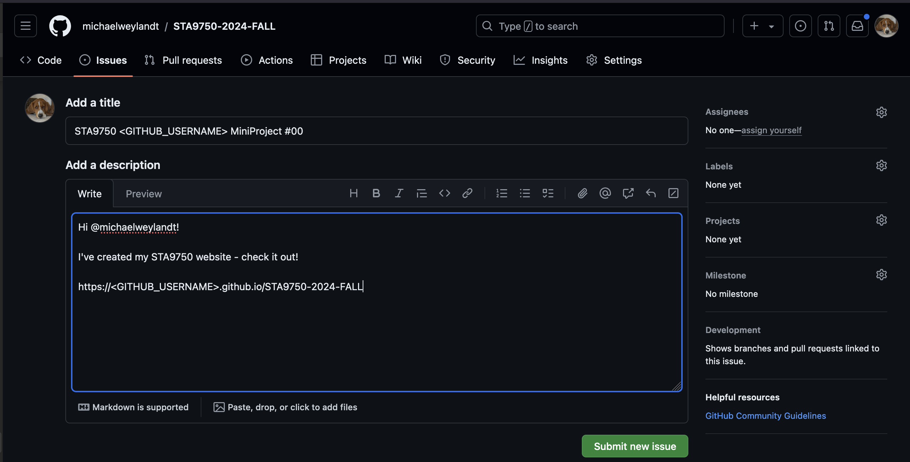

if(!require("usethis")) install.packages("usethis")
usethis::create_github_token()STA 9750 Mini-Project #00: Course Set-Up
In lieu of traditional homework, this course has a set of four mini-projects, which will be assessed in two stages. In the first, you will complete a small data analysis project1; after submission of your analysis, it will be assigned to a classmate, who will evaluate it according to an instructor-provided rubric. This peer feedback stage is an opportunity to see how your classmates answered questions and to compare it to your own response. In doing so, you will learn to evaluate data science work product and will develop a critical eye that can be turned to your own work.
This mini-project, however, is a meta-mini-project, designed to help you set up the course infrastructure you will use for the four graded mini-projects.
NB: Mini-Project #00 is not graded, but it is required. For STA 9750, it serves as the legally mandated Verification of Enrollment activity. If it is not completed on time, you may be involuntarily disenrolled from the course.
Due Dates
- Released to Students: 2025-01-30
- Initial Submission: 2025-02-12 11:45pm ET on GitHub and Brightspace
- Peer Feedback:
- Peer Feedback Assigned: 2025-02-13 on GitHub
- Peer Feedback Due: 2025-02-19 11:45pm ET on GitHub
Estimated Time to Complete: 2 Hours
Estimated Time for Peer Feedback: 1 Hour
This course will use the industry-standard code sharing platform GitHub. Mini-projects and course-projects will be submitted by posting to a relevant GitHub project and creating a world-readable HTML page. A secondary goal of this course is to help students build a web-presence and a data science portfolio, giving you a place to showcase your skills to potential employers. The four mini-projects and the final course project should form an excellent basis for a portfolio. The main aim of Mini-Project #00 is to set up the “skeleton” of this portfolio.
You may choose to complete these tasks under a pseudonym if you do not want current or potential employers, classmates, or the world at large to see your work. You will be required to disclose your pseudonym to the instructor. If you choose to use a pseudonym, it will be straightforward to add your name to any or all coursework after the semester ends. Within the course, you will have the option to switch to a pseudonym as desired, but it is difficult to fully anonymize anything once it has been posted on the public internet. With all those cautions, please take a moment to reflect as to whether you wish to proceed under your own name or using a pseudonym.
Step 0: Install git
You first need to make sure you have git installed on your computer. You may already have it, but if you don’t the following steps can make sure it is installed. To check if it is installed, open a Terminal and run git (Mac) or git.exe (Windows). If you get a message other than “not found”, you should be good to go.
For more detailed instructions, see Chapter 6 of the Happy Git with R book.
Windows
If you are on a Windows machine, install git using the Git for Windows bundle.
Mac
If you are on a Mac, run the following command at the Terminal:
xcode-select --install
This will prompt you to install the “XCode Command Line Tools” which include git.
Stage 1: GitHub Account Creation
To complete this course, you will need a free GitHub personal account, which you can create here. Please note that whatever account name you use will be public, so you need to define a pseudonym here if you choose to use one.
Stage 2: Course Repo Creation
Creating GitHub Repo
Now that you have created a GitHub account, log in and proceed to your dashboard at https://github.com. In the top right corner, click the + symbol and select “New Repository.”23

Create a new repository named STA9750-2025-FALL with a suitable description.

This repo needs to be public. You do not need to select a README, .gitignore, or a license at this time.
After you create your repo, you should see a page like this:

Note the URL highlighted in the main box:
**https://github.com/<GITHUB_ID>/STA9750-2025-FALL.git**
You will need this in the next step.
Connecting GitHub Repo to RStudio
Now that you have set up an empty repo, you need to connect it to your personal machine and to RStudio. RStudio’s concept of projects roughly map to GitHub repos and that is what we will use here.
Open RStudio and click the project menu in the top right corner:

Follow through the menu to click:
- New Project
- Version Control
- Git
This will take you to the following screen:

Copy the .git URL from the previous step into Repository URL.4
Securing Connections to GitHub
An important aspect of source code management is access control to your code repository. While it’s typically no risk to make your code world-readable, you don’t want just anyone being able to add code to your repository. Traditionally, this type of access would be controlled with a username+password scheme, but GitHub has moved to a Access Token structure.
This process is a “one-time” task, documented in the Connect Section of the Happy Git with R book, but we’ll cover the highlights here.
Git Credential Manager
Before starting, you will want to make sure you have installed the Git Credential Manager (GCM). If you used the Git for Windows bundle, you already have GCM installed. If you are on a Mac, you can download the GCM installer directly or install GCM via the GitHub Desktop Client.
GitHub Personal Access Token
Next, you need to create a Personal Access Token (PAT) for GitHub. You can think of this as a “special-purpose” password. Unlike your general account password, a PAT can be restricted to only perform certain activities or only for a limited time period.
The easiest way to do so is to run the following code:
Once you have created a token, copy and save it on your computer. (Note that you only be able to copy it one time, so make sure you save it somewhere memorable.) Then run the following code to register the GitHub PAT on your computer:
if(!require("gitcreds")) install.packages("gitcreds")
gitcreds::gitcreds_set()If that doesn’t work, you can also perform the same steps “by hand”:
After logging in to GitHub via a web browser, visit https://github.com/settings/personal-access-tokens/new to begin the token creation process. Give the token a meaningful name and description and set an expiration date after (at least) the end of the semester.
Set the “Repository Access” to “All repositories” and, under “Permissions > Repository Permissions”, set “Contents” to “Read and Write”. This will now let anyone using your token read and write to all your repositories. After you create your token, you will be given only one opportunity to copy it. (Note that you can change permissions later, but you can only copy the token once.) Copy this and save it for later use. If you loose this token, you may need to generate a new one.
When you make your first push to GitHub (as described below), use this token as your password. If everything is set up correctly, GCM will save this token and use it to authenticate you every time you push to GitHub. You should not need to paste this token every time.
.gitignore
This course will involve many files, not all of which you will want to push to GitHub. Create a file named .gitignore and paste in the following to tell git to ignore certain files. (Note the leading . in the file name.)
**/.quarto/*
.Rproj.user
data/**
**/*_cache/*
*_files/*
**/*_freeze/*
**/*tsv*
**/*csv*
**/*xlsx*
**/*zip
**/*pdf
**/*json
**/*rds
.DS_Store
.Rhistory
/.quarto/*
**/gganim*You may already have a .gitignore file created automatically for you by RStudio. If so, simply open it (by clicking the file name in the Files pane of RStudio) and add the above lines at the bottom.
Additional git configuration
You will, from time to time, need to send somewhat large files to GitHub, primarily high-resolution figures. Since git is primarily designed for small-ish text files (code), this can be a bit tricky, but you can increase the maximum transferrable size by running the following command at the Terminal.
git config --global http.postbuffer 524288000This only increases a limit - you might still run into problems with exceptionally large files, esp. data files if you do not set your .gitignore up properly - but it should avoid most problems.
Next, run the following at the Terminal:
git config --global init.defaultBranch mainThis will tell git to use the term “main” for your first branch. We won’t use branches in this course, but this can eliminate some issues.
git Check
At this point, run the following code to check your git setup:
if(!require("usethis")) install.packages("usethis")
usethis::git_sitrep()This will print out a large amount of helpful information, but the important things to check are:
- Are your name and email set correctly?
- Is your GitHub user set correctly?
- Does the token have the requisite “repo” scope?
- Is the “origin” set correctly for the GitHub project?
Default branch mismatch between local repo and remote.
Certain older versions of git will use the default name master for the initial branch (though the command above should address this). If you get the message
Default branch mismatch between local repo and remote.
from git_sitrep(), proceed to make your first commit (as described below) and then run the command
git branch -m mainThis should eliminate the above issue. Note that this command needs to be run between making your first commit and pushing that first commit.
Initial Push
Now, to make sure everything is working, let’s save a basic README file and push it to GitHub. This is a plain text file with no particular structure.
To create it, click the new file button in RStudio (top left; piece of paper with a green plus) and select Text File. RStudio will open this file in the editor: type some basic content, e.g.,
Submission materials for STA 9750 at Baruch College.
Owner: <YOURNAME>(It doesn’t matter what you push: whatever you type will be the default text appearing when someone visits your repo.)
Save the file and open the Git pane in RStudio.

Check the box next to the README file to stage it for git.

Then click the Commit button a type a brief message (Initial commit is fine).

Finally, push the Push button. If everything works, you should see a screen like the below:

To confirm everything worked, return to the GitHub repo in your browser. You should see the text of your README file displayed at the bottom of the page.
Stage 3: Personal Website Creation
Now that you created a place where you can push files to GitHub and have successfully pushed a basic README, it’s time to build a webpage using quarto.
We will need three pages to build a website:
- A configuration file,
_quarto.yml, used to specify the look and layout of your website. - An
index.qmdfile used to create the homepage. - A build script to create the website.
Configuration File
Open a new text file and save it as _quarto.yml. This is a configuration file used by quarto to control the layout of your site. For a barebones site, copy the following into _quarto.yml:
project:
type: website
output-dir: docs
website:
title: "STA 9750 Submission Material"
description:
Course Projects for STA 9750 at Baruch College
site-url: "https://<GITHUB_NAME>.github.io/STA9750-2025-FALL/"
navbar:
background: primary
search: false
format:
html:
theme: <THEME>
toc: false
editor:
mode: sourceNote that the indentation pattern is important so copy this exactly.
Replace <GITHUB_NAME> with your GitHub user name.
For <THEME>, visit the Bootswatch theme gallery and pick your preferred theme. Replace <THEME> with a lower case version of the theme name; if you want to use the Sandstone theme used for this course website, <THEME> will be sandstone (NB: lower case) without angle brackets.5 See, e.g., the _quarto.yml used for this course.
Once you have created this _quarto.yml, stage it (click the check mark) in RStudio’s git pane.
index.qmd
Next, we’ll build your home page, conventionally called index.html. We will not write the HTML code by hand - it’s quite cumbersome - and will instead let quarto create it for us. Create another plain text file and save it as index.qmd.
This file will be divided into two parts, a header giving the metadata for the site, and a body, giving the content of the site.
First write the header, separated by three horizontal bars (minus signs) above and below. For now, all you need to specify is a title:
---
title: "YOUR TITLE GOES HERE"
---Below the header, write the basic content of your website: a brief introduction of who you are.6 You can use markdown here for formatting. Basic text will suffice, but this is also a great opportunity to include things like a personal headshot, a link to a full resume, or similar.
As you work on this, click the “Render” button at the top of the editor pane to see what your site will look like.
Additional Set-Up - Rendered Code
In order to make sure that your R and quarto environment has been properly configured, it is necessary to include to include a bit of R code in your submission. At this point in the course, you are not required to write any R code of your own, so I’ve written some options here. Pick one to include in your submission - or modify them to do something else fun. If there’s something else you’d like to include, reach out to the instructor and I might be able to help you put something together.
Once you are happy with this landing page and have included on of these dynamic components (or similar), stage it and we’ll move on to building the website properly.
Last Updated
The following code will add a “Last Updated:” footer at the bottom of your page.
```{r}
#| include: false
1+1
```
--------------
Last Updated: `r format(Sys.time(), "%A %m %d, %Y at %H:%M%p")`
Warning
Note that the 1+1 block will not actually be printed because of the #| include: false flag, but it is necessary to force quarto to execute inline code blocks. Alternatively, you can add engine: knitr to the document header (where the title is specified). See Discussion at Github or the Engine Binding documentation.
Baruch Map
The following adds a map with the location of Baruch College. You can change the GPS coordinates and text to another place of relevance to you.
```{r}
#| echo: false
#| message: false
#| warning: false
if(!require("leaflet")){
options(repos=c(CRAN="https://cloud.r-project.org"))
install.packages("leaflet")
stopifnot(require("leaflet"))
}
baruch_longitude <- -73.98333
baruch_latitude <- +40.75028
leaflet() |>
addTiles() |>
setView(baruch_longitude, baruch_latitude, zoom=17) |>
addPopups(baruch_longitude, baruch_latitude,
"I am a Master's student at <b>Baruch College</b>!")
```Resume Hosting
If you have a copy of your resume available as a PDF, TODO.
TODO
build_site.R
Finally, open a new file - but now it’s an R script, not a text file, in RStudio. Copy the following into build_site.R:
#!/usr/bin/env Rscript
if(!require("quarto")){
install.packages("quarto")
}
library(quarto)
if(!quarto::quarto_binary_sitrep()){
stop("Something is wrong with your quarto installation.")
}
quarto::quarto_render(".")
system("git add docs/*")
if(!any(grepl("rstudio", search()))){q("no")}Click the Source button in the top-right corner of the editor pane to run this code. If everything works, it will build your website and automatically stage it. Stage build_site.R as well.
Finally, Commit all these staged files and Push them to GitHub. You have now created a website and just need to turn on a web server so you can access it.
Stage 4: GitHub Pages Deployment
Return to the GitHub repo you created; recall that the URL is something like:
https://github.com/<GITHUB_ID>/STA9750-2025-FALL/
Open the “Settings” menu and proceed to the “Pages” submenu. You should see a page that looks like this:

Under Build and Deployment, set the main branch to deploy and select the docs directory on that branch. Hit save and your website will go live!
To check your website is working, proceed to
https://<GITHUB_ID>.github.io/STA9750-2025-FALL
If everything works, you will see your site! (If you used the Render feature in RStudio, it should look familiar.)
If you get stuck, use the course discussion board to seek help from your classmates and, if necessary, the instructor.
Stage 5: Submission
Once your site is live, you will submit it to the instructor in two ways:
- Log into the course discussion board (Piazza) and send me your GitHub name so I can link it to my gradebook.
- Tag
@michaelweylandton GitHub to make sure I can access your repo.
These both must be completed to complete the assignment and verify enrollment.
Discussion Board (Piazza)
First, send me a private message through the course discussion board with the following details:
- Real Name
- CUNY EmplID (8 digit ID code)
- CUNY email
- GitHub user name
This is the only place where you are required to connect your GitHub ID with your real name and CUNY credentials. I need this information to connect your public activity with my (private) gradebook and the CUNY system.
If all your information looks good, I might not reply through the discussion board. When I reply through GitHub, I’m acknowledging both parts of your submission.
Instructor Tagging
Finally, you’re going to contact me through GitHub: go to7
https://github.com/michaelweylandt/STA9750-2025-FALL/issues/new
to open a new issue. Title the issue STA 9750 <GITHUB_ID> MiniProject #00 and fill in the following text for the issue:
Hi @michaelweylandt!
I've created my STA 9750 website - check it out!
https://<GITHUB_ID>.github.io/STA9750-2025-FALL/(Replace <GITHUB_ID> with your username throughout.)

This will send me a notification through GitHub and I will confirm that I can access your repository and website. You should also use the course helper scripts to verify you have opened a GitHub issue properly. For this project, simply run:
source("https://michael-weylandt.com/STA9750/load_helpers.R")
mp_submission_verify(0, "<GITHUB_ID>")If you don’t do this, I may not be able toaccess your graded assignments when you submit them! I will confirm that I have your real ID verified as well.
Wrap-Up
Once I acknowledge receipt of your ID and website, you’re done with Mini-Project #00! You’ve built a website and are ready for the course to begin in earnest.
Mini-Projects #01-#04 will be submitted as separate pages in your website (different quarto documents) and hosted via GitHub pages for peer feedback. We will discuss that process in more detail after Mini-Project #00 is complete.
Hints
If you need help, the course discussion board should be your first stop.
If you want to personalize your website further, you can see how I have created mine on GitHub. Recall that the Markdown syntax used by quarto is summarized at https://www.markdownguide.org/basic-syntax/.
You may want to use the About Page functionality to improve the look of your home page. This gives you the ability to link to your social media (personal and professional) or personal blog, to include a professional headshot, etc.
This work ©2025 by Michael Weylandt is licensed under a Creative Commons BY-NC-SA 4.0 license. 
Footnotes
Early in the course, I will ‘scaffold’ most of the analysis, leaving only some small steps for you to fill in. As the course progresses, the mini-projects will be more self-directed.↩︎
Alternatively, simply go to https://github.com/new after logging in.↩︎
Note that these images are taken from a previous offering of this course. Update to the current semester as appropriate.↩︎
You can leave the next two boxes blank or set a custom directory name and location. RStudio’s defaults are reasonable; the default directory name will simply be
STA9750-2025-FALLand it will be located in your home directory.↩︎Here and everywhere in this course, whenever you are replacing a placeholder of the form
<VALUE>with an actual value, make sure to remove the angle brackets.↩︎If you choose to complete the course using a pseudonym, make up something fun. If you are using your real name, this is a great place to state that you are a Baruch student, your expected graduation date, your field of employment (current or desired), and one or two personal facts. This, along with a LinkedIn page, will quickly become one of the first things that comes up when a potential employer searches your name, so make a good impression!↩︎
Throughout this course, make sure to replace
<GITHUB_ID>with your recently created GitHub ID, making sure to remove the angle brackets. Note that the automated course infrastructure will be looking for precise formatting, so follow these instructions closely.↩︎